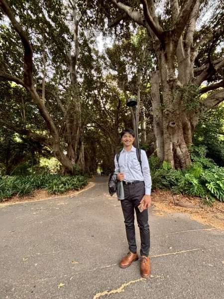

Profile
Yuji Iwama
Ph.D. in Knowledge Science / RN, PHN
National Defense Medical College, Japan
Lecturer, Department of Community and Home Care Nursing, School of Nursing
How can the “invisible thinking” that experienced professionals use in practice be externalized and modeled so that others can learn from it? And how can that learning be evaluated? These are the questions that drive my research.
- B.S. in Nursing, Faculty of Nursing and Medical Care, Keio University. Staff nurse at Keio University Hospital (intensive care, urology, and chemotherapy units)
- Visiting Student, Indian Institute of Technology Gandhinagar, India (during master course at JAIST)
- Visiting nurse, Tetome Home-Visit Nursing Station Edogawa
- Ph.D. in Knowledge Science, Japan Advanced Institute of Science and Technology (JAIST). Assistant Professor, National Defense Medical College
- Lecturer, National Defense Medical College (current position)
